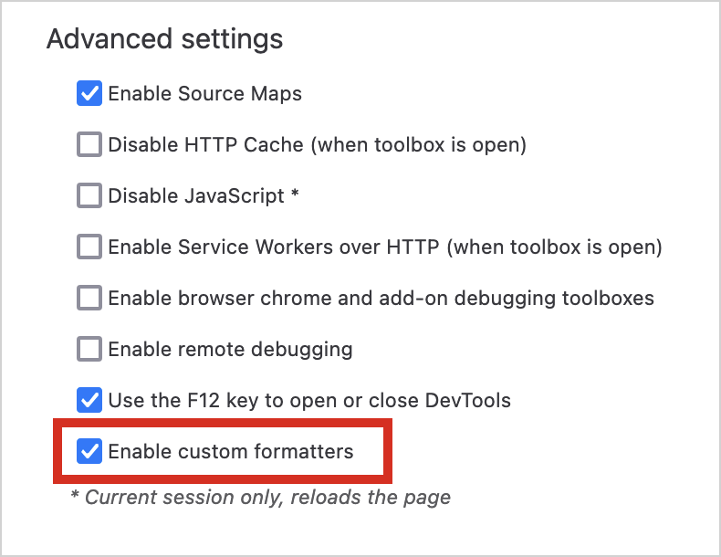

The Kotlin plugins that support 2.1.20 are bundled in the latest IntelliJ IDEA and Android Studio. You don't need to update the Kotlin plugin in your IDE. All you need to do is to change the Kotlin version to 2.1.20 in your build scripts.
Download sources for Kotlin artifacts in projects with OSGi support
Sources of all dependencies of the
kotlin-osgi-bundle
library are now included in its distribution. This allows IntelliJ IDEA to download these sources to provide documentation for Kotlin symbols and improve the debugging experience.
Kotlin K2 compiler
We're continuing to improve plugin support for the new Kotlin K2 compiler. This release brings updates to the new kapt and Lombok plugins.
New default kapt plugin
Starting with Kotlin 2.1.20, the K2 implementation of the kapt compiler plugin is enabled by default for all the projects.
The JetBrains team launched the new implementation of the kapt plugin with the K2 compiler back in Kotlin 1.9.20. Since then, we have further developed the internal implementation of K2 kapt and made its behavior similar to that of the K1 version, while significantly improving its performance as well.
If you encounter any issues when using kapt with the K2 compiler, you can temporarily revert to the previous plugin implementation.
To do this, add the following option to the
gradle.properties
file of your project:
Lombok compiler plugin: support for
@SuperBuilder
and updates on
@Builder
The
Kotlin Lombok compiler plugin
now supports the
@SuperBuilder
annotation, making it easier to create builders for class hierarchies. Previously, developers using Lombok in Kotlin had to manually define builders when working with inheritance. With
@SuperBuilder
, the builder automatically inherits superclass fields, allowing you to initialize them when constructing an object.
Additionally, this update includes several improvements and bug fixes:
The
@Builder
annotation now works on constructors, allowing more flexible object creation. For more details, see the corresponding
YouTrack issue
.
Several issues related to Lombok's code generation in Kotlin have been resolved, improving overall compatibility. For more details, see the
GitHub changelog
.
For more information about the
@SuperBuilder
annotation, see the official
Lombok documentation
.
Kotlin Multiplatform: new DSL to replace Gradle's Application plugin
Starting with Gradle 8.7, the
Application
plugin is no longer compatible with the Kotlin Multiplatform Gradle plugin. Kotlin 2.1.20 introduces an Experimental DSL to achieve similar functionality. The new
executable {}
block configures execution tasks and Gradle
distributions
for JVM targets.
Before the
executable {}
block in your build script, add the following
@OptIn
annotation:
@OptIn(ExperimentalKotlinGradlePluginApi::class)
For example:
kotlin {
jvm {
@OptIn(ExperimentalKotlinGradlePluginApi::class)
binaries {
// Configures a JavaExec task named "runJvm" and a Gradle distribution for the "main" compilation in this target
executable {
mainClass.set("foo.MainKt")
}
// Configures a JavaExec task named "runJvmAnother" and a Gradle distribution for the "main" compilation
executable(KotlinCompilation.MAIN_COMPILATION_NAME, "another") {
// Set a different class
mainClass.set("foo.MainAnotherKt")
}
// Configures a JavaExec task named "runJvmTest" and a Gradle distribution for the "test" compilation
executable(KotlinCompilation.TEST_COMPILATION_NAME) {
mainClass.set("foo.MainTestKt")
}
// Configures a JavaExec task named "runJvmTestAnother" and a Gradle distribution for the "test" compilation
executable(KotlinCompilation.TEST_COMPILATION_NAME, "another") {
mainClass.set("foo.MainAnotherTestKt")
}
}
}
}
In this example, Gradle's
Distribution
plugin is applied on the first
executable {}
block.
Kotlin 2.1.20 introduces a new inlining optimization pass, which comes before the actual code generation phase.
The new inlining pass in the Kotlin/Native compiler should perform better than the standard LLVM inliner and improve the runtime performance of the generated code.
The new inlining pass is currently
Experimental
. To try it out, use the following compiler option:
-Xbinary=preCodegenInlineThreshold=40
Our experiments show that setting the threshold to 40 tokens (code units parsed by the compiler) provides a reasonable compromise for compilation optimization. According to our benchmarks, this gives an overall performance improvement of 9.5%. Of course, you can try out other values, too.
If you experience increased binary size or compilation time, please report such issues via
YouTrack
.
Kotlin/Wasm
This release improves Kotlin/Wasm debugging and property usage. Custom formatters now work out of the box in development builds, while DWARF debugging facilitates code inspection. Additionally, the Provider API simplifies property usage in Kotlin/Wasm and Kotlin/JS.
Custom formatters enabled by default
Before, you had to
manually configure
custom formatters to improve debugging in web browsers when working with Kotlin/Wasm code.
In this release, custom formatters are enabled by default in development builds, so you don't need additional Gradle configurations.
To use this feature, you only need to ensure that custom formatters are enabled in your browser's developer tools:
In Chrome DevTools, find the custom formatters checkbox in
Settings | Preferences | Console
:
In Firefox DevTools, find the custom formatters checkbox in
Settings | Advanced settings
:

This change primarily affects Kotlin/Wasm development builds. If you have specific requirements for production builds, you need to adjust your Gradle configuration accordingly. To do so, add the following compiler option to the
wasmJs {}
block:
Kotlin 2.1.20 introduces support for DWARF (debugging with arbitrary record format) in Kotlin/Wasm.
With this change, the Kotlin/Wasm compiler is able to embed DWARF data into the generated WebAssembly (Wasm) binary. Many debuggers and virtual machines can read this data to provide insights into the compiled code.
DWARF is mainly useful for debugging Kotlin/Wasm applications inside standalone Wasm virtual machines (VMs). To use this feature, the Wasm VM and debugger must support DWARF.
With DWARF support, you can step through Kotlin/Wasm applications, inspect variables, and gain code insights. To enable this feature, use the following compiler option:
-Xwasm-generate-dwarf
Migration to Provider API for Kotlin/Wasm and Kotlin/JS properties
Previously, properties in Kotlin/Wasm and Kotlin/JS extensions were mutable (
var
) and assigned directly in build scripts:
the<NodeJsExtension>().version = "2.0.0"
Now, properties are exposed through the
Provider API
, and you must use the
.set()
function to assign values:
the<NodeJsEnvSpec>().version.set("2.0.0")
The Provider API ensures that values are lazily computed and properly integrated with task dependencies, improving build performance.
With this change, direct property assignments are deprecated in favor of
*EnvSpec
classes, such as
NodeJsEnvSpec
and
YarnRootEnvSpec
.
Additionally, several alias tasks have been removed to avoid confusion:
Deprecated task
Replacement
wasmJsRun
wasmJsBrowserDevelopmentRun
wasmJsBrowserRun
wasmJsBrowserDevelopmentRun
wasmJsNodeRun
wasmJsNodeDevelopmentRun
wasmJsBrowserWebpack
wasmJsBrowserProductionWebpack
or
wasmJsBrowserDistribution
jsRun
jsBrowserDevelopmentRun
jsBrowserRun
jsBrowserDevelopmentRun
jsNodeRun
jsNodeDevelopmentRun
jsBrowserWebpack
jsBrowserProductionWebpack
or
jsBrowserDistribution
If you only use Kotlin/JS or Kotlin/Wasm in build scripts, no action is required as Gradle automatically handles assignments.
However, if you maintain a plugin based on the Kotlin Gradle Plugin, and your plugin does not apply
kotlin-dsl
, you must update property assignments to use the
.set()
function.
Gradle
Kotlin 2.1.20 is fully compatible with Gradle 7.6.3 through 8.11. You can also use Gradle versions up to the latest Gradle release. However, be aware that doing so may result in deprecation warnings, and some new Gradle features might not work.
This version of Kotlin includes compatibility of Kotlin Gradle plugins with Gradle's Isolated Projects as well as support for custom Gradle publication variants.
Kotlin Gradle plugins compatible with Gradle's Isolated Projects
Previously, you had to configure the Kotlin Gradle plugin to make your project compatible with the Isolated Projects feature before you could try it out. In Kotlin 2.1.20, this additional step is no longer necessary.
Gradle's Isolated Projects feature is supported in Kotlin Gradle plugins for both multiplatform projects and projects that contain only the JVM or Android target.
Specifically for multiplatform projects, if you notice problems with your Gradle build after upgrading, you can opt out of the new Kotlin Gradle plugin behavior by adding:
kotlin.kmp.isolated-projects.support=disable
However, if you use this Gradle property in your multiplatform project, you can't use the Isolated Projects feature.
Let us know about your experience with this feature in
YouTrack
.
Support for adding custom Gradle publication variants
Kotlin 2.1.20 introduces support for adding custom
Gradle publication variants
. This feature is available for multiplatform projects and projects targeting the JVM.
This feature is
Experimental
. To opt in, use the
@OptIn(ExperimentalKotlinGradlePluginApi::class)
annotation.
To add a custom Gradle publication variant, invoke the
adhocSoftwareComponent()
function, which returns an instance of
AdhocComponentWithVariants
that you can configure in the Kotlin DSL:
plugins {
// Only JVM and Multiplatform are supported
kotlin("jvm")
// or
kotlin("multiplatform")
}
kotlin {
@OptIn(ExperimentalKotlinGradlePluginApi::class)
publishing {
// Returns an instance of AdhocSoftwareComponent
adhocSoftwareComponent()
// Alternatively, you can configure AdhocSoftwareComponent in the DSL block as follows
adhocSoftwareComponent {
// Add your custom variants here using the AdhocSoftwareComponent API
}
}
}
Standard library
This release brings new Experimental features to the standard library: common atomic types, improved support for UUIDs, and new time-tracking functionality.
Common atomic types
In Kotlin 2.1.20, we are introducing common atomic types in the standard library's
kotlin.concurrent.atomics
package, enabling shared, platform-independent code for thread-safe operations. This simplifies development for Kotlin Multiplatform projects by removing the need to duplicate atomic-dependent logic across source sets.
The
kotlin.concurrent.atomics
package and its properties are
Experimental
. To opt in, use the
@OptIn(ExperimentalAtomicApi::class)
annotation or the compiler option
-opt-in=kotlin.ExperimentalAtomicApi
.
Here's an example that shows how you can use
AtomicInt
to safely count processed items across multiple threads:
// Imports the necessary libraries
import kotlin.concurrent.atomics.*
import kotlinx.coroutines.*
//sampleStart
@OptIn(ExperimentalAtomicApi::class)
suspend fun main() {
// Initializes the atomic counter for processed items
var processedItems = AtomicInt(0)
val totalItems = 100
val items = List(totalItems) { "item$it" }
// Splits the items into chunks for processing by multiple coroutines
val chunkSize = 20
val itemChunks = items.chunked(chunkSize)
coroutineScope {
for (chunk in itemChunks) {
launch {
for (item in chunk) {
println("Processing $item in thread ${Thread.currentThread()}")
processedItems += 1 // Increment counter atomically
}
}
}
}
//sampleEnd
// Prints the total number of processed items
println("Total processed items: ${processedItems.load()}")
}
To enable seamless interoperability between Kotlin's atomic types and Java's
java.util.concurrent.atomic
atomic types, the API provides the
.asJavaAtomic()
and
.asKotlinAtomic()
extension functions. On the JVM, Kotlin atomics and Java atomics are the same types in runtime, so you can transform Java atomics into Kotlin atomics and vice versa without any overhead.
Here's an example that shows how Kotlin and Java atomic types can work together:
// Imports the necessary libraries
import kotlin.concurrent.atomics.*
import java.util.concurrent.atomic.*
//sampleStart
@OptIn(ExperimentalAtomicApi::class)
fun main() {
// Converts Kotlin AtomicInt to Java's AtomicInteger
val kotlinAtomic = AtomicInt(42)
val javaAtomic: AtomicInteger = kotlinAtomic.asJavaAtomic()
println("Java atomic value: ${javaAtomic.get()}")
// Java atomic value: 42
// Converts Java's AtomicInteger back to Kotlin's AtomicInt
val kotlinAgain: AtomicInt = javaAtomic.asKotlinAtomic()
println("Kotlin atomic value: ${kotlinAgain.load()}")
// Kotlin atomic value: 42
}
//sampleEnd
Changes in UUID parsing, formatting, and comparability
Previously, the
parse()
function only accepted UUIDs in the hex-and-dash format. With Kotlin 2.1.20, you can use
parse()
for
both
the hex-and-dash and the plain hexadecimal (without dashes) formats.
We've also introduced functions specific to operations with the hex-and-dash format in this release:
parseHexDash()
parses UUIDs from the hex-and-dash format.
toHexDashString()
converts a
Uuid
into a
String
in the hex-and-dash format (mirroring the functionality of
toString()
).
These functions work similarly to
parseHex()
and
toHexString()
, which were introduced earlier for the hexadecimal format. Explicit naming for parsing and formatting functionality should improve code clarity and your overall experience with UUIDs.
UUIDs in Kotlin are now
Comparable
. Starting with Kotlin 2.1.20, you can directly compare and sort values of the
Uuid
type. This enables the use of the
<
and
>
operators and standard library extensions available exclusively for
Comparable
types or their collections (such as
sorted()
), and it also allows passing UUIDs to any functions or APIs that require the
Comparable
interface.
Remember that the UUID support in the standard library is still
Experimental
. To opt in, use the
@OptIn(ExperimentalUuidApi::class)
annotation or the compiler option
-opt-in=kotlin.uuid.ExperimentalUuidApi
:
import kotlin.uuid.ExperimentalUuidApi
import kotlin.uuid.Uuid
//sampleStart
@OptIn(ExperimentalUuidApi::class)
fun main() {
// parse() accepts a UUID in a plain hexadecimal format
val uuid = Uuid.parse("550e8400e29b41d4a716446655440000")
// Converts it to the hex-and-dash format
val hexDashFormat = uuid.toHexDashString()
// Outputs the UUID in the hex-and-dash format
println(hexDashFormat)
// Outputs UUIDs in ascending order
println(
listOf(
uuid,
Uuid.parse("780e8400e29b41d4a716446655440005"),
Uuid.parse("5ab88400e29b41d4a716446655440076")
).sorted()
)
}
//sampleEnd
New time tracking functionality
Starting with Kotlin 2.1.20, the standard library provides the ability to represent a moment in time. This functionality was previously only available in
kotlinx-datetime
, an official Kotlin library.
The
kotlinx.datetime.Clock
interface is introduced to the standard library as
kotlin.time.Clock
and the
kotlinx.datetime.Instant
class as
kotlin.time.Instant
. These concepts naturally align with the
time
package in the standard library because they're only concerned with moments in time compared to a more complex calendar and timezone functionality that remains in
kotlinx-datetime
.
Instant
and
Clock
are useful when you need precise time tracking without considering time zones or dates. For example, you can use them to log events with timestamps, measure durations between two points in time, and obtain the current moment for system processes.
To provide interoperability with other languages, additional converter functions are available:
.toKotlinInstant()
converts a time value to a
kotlin.time.Instant
instance.
.toJavaInstant()
converts the
kotlin.time.Instant
value to a
java.time.Instant
value.
Instant.toJSDate()
converts the
kotlin.time.Instant
value to an instance of the JS
Date
class. This conversion is not precise; JS uses millisecond precision to represent dates, while Kotlin allows for nanosecond resolution.
The new time features of the standard library are still
Experimental
. To opt in, use the
@OptIn(ExperimentalTime::class)
annotation:
import kotlin.time.*
@OptIn(ExperimentalTime::class)
fun main() {
// Get the current moment in time
val currentInstant = Clock.System.now()
println("Current time: $currentInstant")
// Find the difference between two moments in time
val pastInstant = Instant.parse("2023-01-01T00:00:00Z")
val duration = currentInstant - pastInstant
println("Time elapsed since 2023-01-01: $duration")
}
For more information on the implementation, see this
KEEP proposal
.
Compose compiler
In 2.1.20, the Compose compiler relaxes some restrictions on
@Composable
functions introduced in previous releases. In addition, the Compose compiler Gradle plugin is set to include source information by default, aligning the behavior on all platforms with Android.
Support for default arguments in open
@Composable
functions
The compiler previously restricted default arguments in open
@Composable
functions due to incorrect compiler output, which would result in crashes at runtime. The underlying issue is now resolved, and default arguments are fully supported when used with Kotlin 2.1.20 or newer.
Compose compiler allowed default arguments in open functions before
version 1.5.8
, so the support depends on project configuration:
If an open composable function is compiled with Kotlin version 2.1.20 or newer, the compiler generates correct wrappers for default arguments. This includes wrappers compatible with pre-1.5.8 binaries, meaning that downstream libraries will also be able to use this open function.
If the open composable function is compiled with Kotlin older than 2.1.20, Compose uses a compatibility mode, which might result in runtime crashes. When using the compatibility mode, the compiler emits a warning to highlight potential problems.
Final overridden functions are allowed to be restartable
Virtual functions (overrides of
open
and
abstract
, including interfaces)
were forced to be non-restartable with the 2.1.0 release
. This restriction is now relaxed for functions that are members of final classes or are
final
themselves – they will be restarted or skipped as usual.
You might observe some behavior changes in affected functions after upgrading to Kotlin 2.1.20. To force non-restartable logic from the previous version, apply the
@NonRestartableComposable
annotation to the function.
ComposableSingletons
removed from public API
ComposableSingletons
is a class created by the Compose compiler when optimizing
@Composable
lambdas. Lambdas that do not capture any parameters are allocated once and cached in a property of the class, saving allocations during runtime. The class is generated with internal visibility and is only intended for optimizing lambdas inside a compilation unit (usually a file).
However, this optimization was also applied to
inline
function bodies, which resulted in singleton lambda instances leaking into the public API. To fix this problem, starting with 2.1.20,
@Composable
lambdas are no longer optimized into singletons inside inline functions. At the same time, the Compose compiler will continue generating singleton classes and lambdas for inline functions to support binary compatibility for modules that were compiled under the previous model.
Source information included by default
The Compose compiler Gradle plugin already has the
including source information
feature enabled by default on Android. Starting with Kotlin 2.1.20, this feature will be enabled by default on all platforms.
Remember to check if you set this option using
freeCompilerArgs
. This method can cause the build to fail when used alongside the plugin, due to an option being effectively set twice.
The JetBrains team is proceeding with the deprecation of the
kotlin-android-extensions
plugin. If you try to use it in your project, you'll now get a configuration error, and no plugin code will be executed.
The legacy
kotlin.incremental.classpath.snapshot.enabled
property has been removed from the Kotlin Gradle plugin. The property used to provide an opportunity to fall back to a built-in ABI snapshot on the JVM. The plugin now uses other methods to detect and avoid unnecessary recompilations, making the property obsolete.
Documentation updates
The Kotlin documentation has received some notable changes:
Revamped and new pages
Kotlin roadmap
– see the updated list of Kotlin's priorities on language and ecosystem evolution.
Gradle best practices
page – learn essential best practices for optimizing your Gradle builds and improving performance.
Starting from IntelliJ IDEA 2023.3 and Android Studio Iguana (2023.2.1) Canary 15, the Kotlin plugin is distributed as a bundled plugin included in your IDE. This means that you can't install the plugin from JetBrains Marketplace anymore.